注意该文章排版匆促有些混乱，可能图文不否，也可能丢图片了。以后会更正
初学Python之if __name__ == "__main__":小分析
这个语句在.py文件中很常见但是一直对其具体作用比较含糊。为此特地小小的在网上搜了下，并实际操作，其过程与结果详细如下。
参考1=http://www.dengfeilong.com/post/60.html
2= https://blog.csdn.net/yjk13703623757/article/details/77918633
首先分析，这是一个if判断，判断的是__name__（可见这是python的一个关键词）是否等于字符串"__main__"。
那么打印一下__name__，到底是个啥。
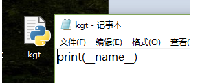
发现就是"__main__"
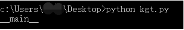
也就是说
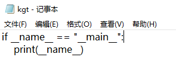
这样写是没问题，能执行打印。
可见__name__的值就是"__main__"。那再来分析"__main__"，从c、c++、c#、java等语言中都有入口函数、主函数这一说，
main这个单词也有这个含义，那么这个语句是否有像入口函数那样的功能呢：
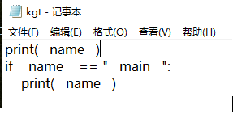
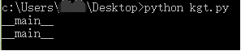
可见不是那样，按照顺序，语句都被执行了。因为Python毕竟是脚本语言，一条一条被解释器解释后运行，没有统一入口。
这条语句的作用也是脚本语言所特有的。因为脚本语言既然是一条条被解释运行，没有统一入口，那么当多个文件时：
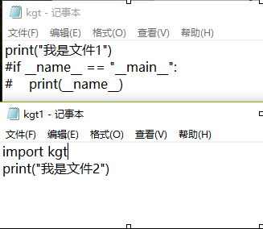
执行文件2：
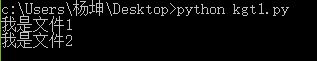
可见引入的文件依然是按照顺序解释，把引入的顺序换一下再看一遍：
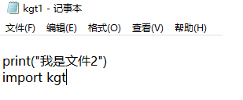
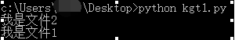
那么问题的关键就来了，像这样当多个文件时，大多数情况我们其实是希望像其他语言那样，例如调用那个文件的某个函数，
而不是这样直接把整个文件给逐条解释执行了。
这就用了if __name__ == "__main__":解决，在这个if下的就不会在被调用中执行：
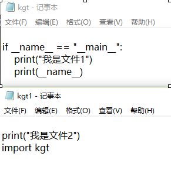
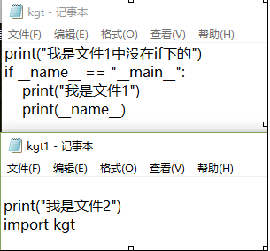
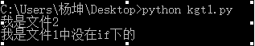
在文件2执行中调用的文件1的__name__可见不是"__main__":
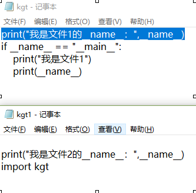
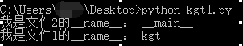
可见只有执行本文件的时候才是"__main__"不然就是他的文件名：
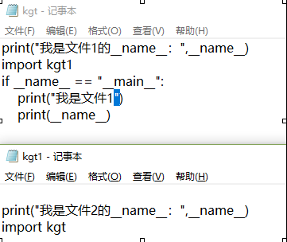
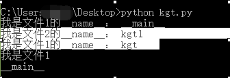
被选中的部分是kgt1的执行。可见执行结果，证实了没有被调用(import)的时候，只要是执行体是本文件,
里面的__name__就是__main__，否则就是文件名。
以上就是它的功能。
另外如果在包中,__init__.py文件(模块)里写入print("__name__")可以显示包名。
说到__init__.py文件，这个文件就是包里的初始化模块，有这个文件的文件夹将被python看作一个包。
这个文件里面可以为空，只要文件名是这个即可。
另外还有一个__main__.py模块，是包的入口模块，这个文件其实就是作为该包的一个整体调用的写法都放在里面，
毕竟做一个东西都希望只有一个入口调用所有文件将程序运作起来。
Python的-m参数用于将一个模块或者包作为一个脚本运行，而__main__.py文件相当于是一个包的“入口程序“。[参考2]
python xxx.py，直接运行xxx.py文件
python -m xxx.py，把xxx.py当做模块运行
以模块方式运行是把你输入命令的目录（也就是当前工作路径），放到了 sys.path 属性中。
参考3=：
https://www.cnblogs.com/maoguy/p/6670988.html
最后再记一下python -m 对包中__main__.py的影响：
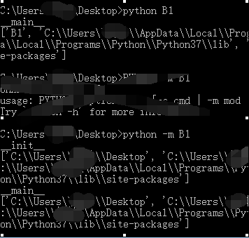
这是因为用-m会把当前目录放入了path，用模块方式运行就是会有一个类似import的引入操作，从本文上面可看出import操作会执行包内__init__模块文件。而不加-m就是直接运行就是在从该包的__main__.py文件开始了。
over